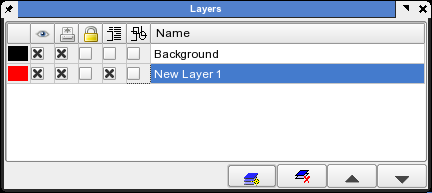
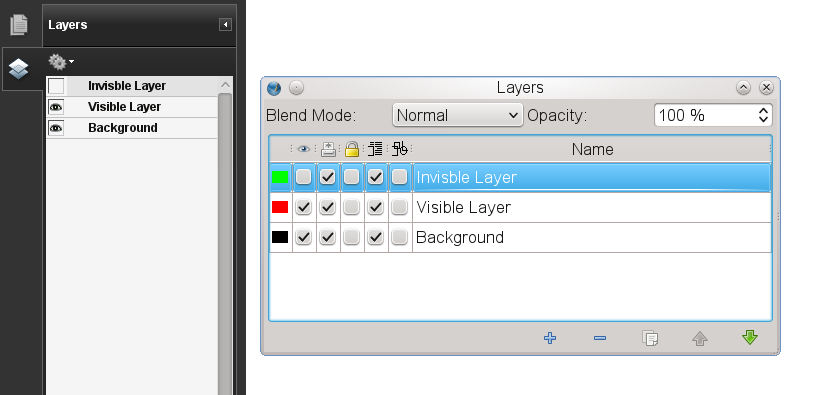

Layers are a very easy to use and can solve some challenges with certain types of documents or working with text, artwork or images without affecting other objects.
|  |
Note: This feature is only available when Scribus is compiled with Cairo 1.2+
Scribus has a very powerful and versatile way of handling layers in a document via the way that not only layers can be made transparent and their opacity changed, but the so called blend modes can be selected to control the way transparency is rendered. Objects can be similarly controled individually. Blend modes are a way for you to control how the pixels of the layers are combined. When a given layer is selected the blend mode chosen affects how that layer's pixels are combined with only those layers below the selected layer. The layers remain separately editable and only are combined in the display and at print/export time. Note also, except when printing to certain printers on Windows, this type of transparency will not be supported well, if it at all. Exporting PDF version 1.4 (Acrobat 5.0) or higher will support these modes properly.
Similarly, these blend modes can be used with individual objects or groups, separately from the layers options via the properties palette. In addtion, when importing certain PSD (Photoshop native files), there is an addtional blend mode Scribus supports called Dissolve which adds random pixels from the selected layer on top the layers below, resulting in specks of color. You can use the opacity percentage spinbox to regulate the level of speckles.
|  |
This is for the PSD importer only